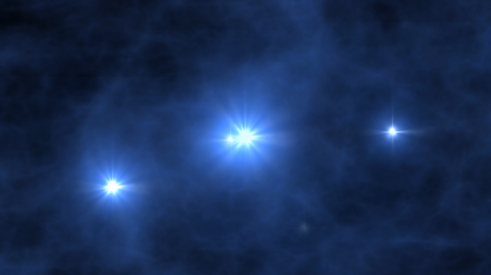
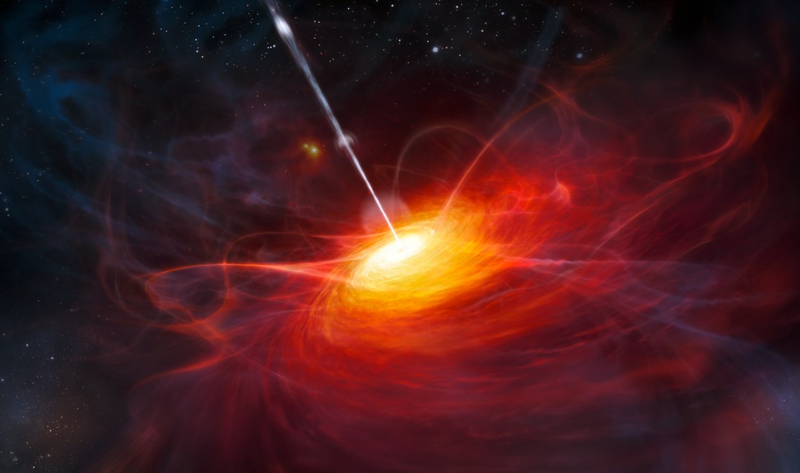

Population III Stars
Stars composed exclusively of primordial hydrogen
and helium may have populated the universe with
heavy metals through their deaths. The structure of
the turbulent and magnetized molecular clouds that
formed these stars provides insight into
the primordial stellar population.

Active Galactic Nuclei
The supermassive black hole and its surrounding
region at the center of a galaxy emit more
luminous radiation than the entire galaxy itself,
even though it is ~100,000 times smaller than the
galaxy. Despite the differing scales, the black
hole and the galaxy maintain some form of coevolution,
where a larger galaxy will host a larger black hole.

Pulsar Timing
Some rapidly rotating neutron stars emit
periodic radio pulses that can be used to detect
low frequency gravitational waves. An array of
various galactic pulsars functions as a galaxy-wide
interferometer, detecting gravitational waves as they
interfere with the arrival time of the radio pulses.
{kind=link}
{kind=link}